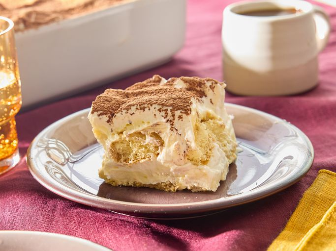

Home
Tiramisu

Description
Tiramisu is a coffee-flavored dessert that features layers of homemade
whipped cream, an egg yolk-enriched mascarpone filling, and coffee-soaked
ladyfingers.
Ingredients
- 6 large egg yolks
- ¾ cup white sugar
- ⅔ cup milk
- 1 ¼ cups heavy cream
- ½ teaspoon vanilla extract
- 1 pound mascarpone cheese, at room temperature
- ¼ cup strong brewed coffee, at room temperature
- 2 tablespoons rum
- 2 (3 ounce) packages ladyfinger cookies
- 1 tablespoon unsweetened cocoa powder